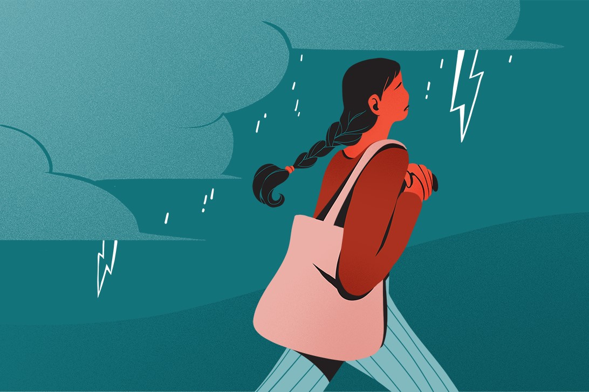

Pengantar
Kesehatan mental adalah aspek penting dari kesejahteraan seseorang, mencakup kesehatan emosional, psikologis, dan sosial. Gangguan kesehatan mental bisa muncul dalam berbagai bentuk, dan penting untuk mengenali serta memahami berbagai jenis gangguan kesehatan mental agar dapat mencari bantuan yang tepat.
1. Depresi
Depresi adalah sebuah kelainan suasana hati yang memengaruhi pikiran, perasaan, dan perilaku seseorang. Seseorang yang mengalami depresi mungkin merasa sedih, cemas, kehilangan minat terhadap aktivitas yang biasanya mereka sukai, merasa tidak berharga, atau memiliki pemikiran negatif yang berulang tentang diri sendiri, kehidupan, atau kematian. Depresi dapat menyebabkan penurunan energi, gangguan tidur, perubahan nafsu makan, dan masalah fisik lainnya.
Penyebab:
a. Faktor biologis: Terdapat perubahan biologis dalam otak individu yang mengalami depresi, termasuk ketidakseimbangan zat kimia neurotransmiter seperti serotonin, noradrenalin, dan dopamin.
b. Faktor genetik Depresi dapat memiliki faktor keturunan, yang berarti seseorang lebih rentan mengalami depresi jika ada riwayat keluarga yang menderita kondisi ini.
c. Faktor lingkungan: Beberapa kejadian atau situasi stres, seperti kehilangan orang terdekat, trauma, masalah keuangan, atau konflik hubungan, dapat menjadi pemicu depresi pada individu yang rentan.
d. Faktor kesehatan mental dan fisik: Gangguan kecemasan, gangguan tidur, dan kondisi medis tertentu seperti penyakit tiroid atau penyakit kronis juga dapat berkontribusi terhadap terjadinya depresi.
2. Gangguan Kecemasan (Anxiety)
Gangguan Kecemasan Umum (GAD) adalah kondisi mental yang ditandai dengan kecemasan yang berlebihan, berlarut-larut, dan sulit dikendalikan. Orang dengan GAD sering merasa khawatir atau cemas tentang berbagai hal dalam kehidupan sehari-hari, bahkan tanpa alasan yang jelas. Kecemasan yang berlebihan tersebut dapat mengganggu fungsi sehari-hari dan kualitas hidup seseorang.
Penyebab:
a. Keturunan: Riwayat keluarga dengan GAD atau gangguan kecemasan lainnya dapat meningkatkan risiko seseorang mengembangkan GAD.
b. Ketidakseimbangan kimia otak: Perubahan dalam neurotransmiter otak, seperti serotonin, dopamine, dan norepinefrin, dapat berperan dalam perkembangan GAD.
c. Stres dan traumatis: Pengalaman stres yang berkepanjangan atau pengalaman trauma tertentu dapat berkontribusi pada timbulnya GAD.
d. Perubahan hormon: Pengalaman stres yang berkepanjangan atau pengalaman trauma tertentu dapat berkontribusi pada timbulnya GAD.
e. Kondisi medis: Beberapa kondisi medis tertentu, seperti gangguan tiroid atau penyakit jantung, dapat berhubungan dengan peningkatan risiko GAD.
3. Bipolar Disorder
Bipolar disorder ditandai dengan perubahan suasana hati yang ekstrem, mulai dari mania (kegembiraan berlebihan) hingga depresi berat. Pengelolaan gangguan bipolar sering kali melibatkan kombinasi obat-obatan dan terapi psikologis. Gangguan bipolar dapat diderita seumur hidup sehingga memengaruhi aktivitas penderitanya. Namun, pemberian obat-obatan dan psikoterapi dapat membantu penderita untuk menjalani aktivitasnya sehari-hari.
Penyebab:
a. Struktur dan Fungsi Otak: Mekanisme kerja otak pada orang dengan gangguan bipolar dengan orang normal atau dengan gangguan mental lain, memiliki karakteristik sendiri-sendiri. Hal ini penting untuk diketahui untuk menentukan pengobatan yang tepat untuk tiap-tiap gangguan mental.
b. Genetik: Ada kecenderungan bahwa gangguan bipolar dipengaruhi oleh faktor genetik, namun tidak selalu. Apabila ada 2 bayi kembar identik, salah satu bayi mengalami gangguan bipolar, maka bayi yang satu lagi belum tentu akan mengalami gangguan bipolar juga walaupun memiliki genetik yang sama.
c. Keturunan: Anak yang memiliki riwayat keluarga, orang tua atau saudara kandung dengan gangguan bipolar, maka cenderung akan memiliki gangguan bipolar juga.
4. Skizofrenia
Skizofrenia adalah gangguan serius yang mempengaruhi cara berpikir seseorang, termasuk delusi dan halusinasi. Penderita skizofrenia membutuhkan perawatan medis jangka panjang untuk mengelola kondisi ini, sering kali melalui pengobatan dan terapi. Orang dengan schizophrenia umumnya mengalami psikosis di mana penderitanya tidak dapat menafsirkan realita secara normal. Dengan kata lain, penderita penyakit ini tidak bisa membedakan mana khayalan dan kenyataan.
Penyebab:
a. Masalah dengan keseimbangan kimia di otak: Kadar zat kimia dalam otak bernama dopamin (dopamine) dan glutamat di dalam otak yang tidak seimbang diyakini para ahli bisa menyebabkan penyakit ini.
b. Perbedaan struktur otak: Studi pemindai saraf otak menunjukkan perbedaan dalam struktur otak dan sistem saraf pusat orang dengan penyakit ini. Para peneliti tidak yakin mengapa hal tersebut bisa terjadi, tetapi mereka menyebutkan bahwa gangguan kejiwaan ini terkait dengan penyakit otak.
c. Genetik: Faktor genetik atau keturunan bisa menjadi penyebab skizofrenia. Jadi, jika salah satu keluarga inti Anda terkena penyakit ini, Anda berisiko tinggi mengalami hal yang serupa.
d. Faktor lingkungan: Faktor lingkungan yang mungkin menjadi penyebab antara lain infeksi virus, kekurangan nutrisi ketika masih dalam kandungan, atau berada di lingkungan yang penuh tekanan hingga mengakibatkan stres.
c. Penggunaan obat tertentu: Penyalahgunaan obat-obatan terlarang, seperti narkotika disebut dapat menjadi penyebab skizofrenia.
5. Gangguan Stres Pasca Trauma (PTSD)
PTSD (post-traumatic stress disorder) atau gangguan stres pascatrauma adalah gangguan mental yang muncul setelah seseorang mengalami atau menyaksikan peristiwa yang bersifat traumatis atau sangat tidak menyenangkan. Beberapa peristiwa traumatis yang dapat memicu PTSD adalah perang, kecelakaan, bencana alam, dan pelecehan seksual. Meski demikian, tidak semua orang yang teringat pada kejadian traumatis berarti terserang PTSD. Ada kriteria khusus yang digunakan untuk menentukan apakah seseorang mengalami PTSD.
Penyebab:
a. Pengalaman yang tidak menyenangkan: Pengalaman yang tidak menyenangkan menjadi faktor utama dalam terbentuknya PTSD di dalam seseorang.
b. Riwayat gangguan mental pada keluarga: Anak yang memiliki riwayat keluarga, orang tua atau saudara kandung dengan gangguan PTSD, maka cenderung akan memiliki gangguan PTSD juga.
c. Kepribadian bawaan yang tempramen.: Kepribadian bawaan seseorang yang tempramen dapat menjadi salah satu faktor penyebab munculnya PTSD.